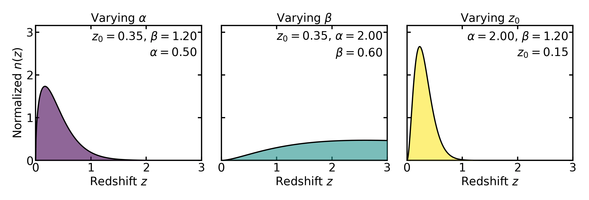

Parent n(z)#
Parent n(z)#
A tomographic analysis begins with an underlying parent redshift distribution \(n(z)\), which describes how galaxies are distributed in redshift before any tomographic binning is applied.
In Binny, this parent distribution plays a central role. It is the starting point from which tomographic bins are constructed, and it sets the baseline population that later enters diagnostics, overlap statistics, and downstream forecasting calculations.
This page describes the parent \(n(z)\) models currently implemented in Binny, why such models are useful, and how they can also be calibrated from mock catalogs rather than specified purely by hand.
Why model a parent \(n(z)\)?#
In many forecasting or methodology studies, one does not begin from a fully observed galaxy catalog. Instead, one works with an analytic or semi-analytic description of the source population. A parent distribution \(n(z)\) is useful because it provides a compact way to encode the overall redshift structure of the sample before introducing tomographic cuts, photo-\(z\) uncertainties, or survey-specific selection effects.
This has several advantages:
it provides a smooth, controllable baseline population,
it makes synthetic or survey-inspired tests reproducible,
it allows one to vary depth or shape parameters in a simple way,
and it separates the description of the overall galaxy population from the later step of constructing tomographic bins.
Conceptually, Binny treats the parent \(n(z)\) as the continuous distribution from which the tomographic bin curves are derived. The bin curves therefore inherit many of their qualitative properties from the choice of parent model.
What is implemented in Binny#
Binny provides a registry of named parent redshift-distribution models. At present, the following models are implemented:
smailshifted_smailgaussiangaussian_mixturegammaschechterlognormalskew_normalstudent_ttophat
These models are exposed through the parent-distribution registry and
can be evaluated through binny.NZTomography.nz_model().
The purpose of the registry is not to claim that all of these models are equally realistic for survey forecasting. Rather, Binny supports a small family of parent distributions because different use cases benefit from different levels of realism, simplicity, or flexibility. Some models are well suited to survey-like baseline populations, while others are useful as controlled toy models for testing, pedagogy, or stress tests of a binning workflow.
Survey-like baseline models#
Among the implemented models, the Smail distribution [Smail1994] is the most natural default for many survey-like applications. It is widely used in forecasting because it provides a smooth, unimodal distribution with a rising low-redshift part and a decaying high-redshift tail. This makes it a convenient phenomenological description of a magnitude-limited galaxy sample.
In Binny, the Smail-like parent distribution is parameterized through a redshift scale \(z_0\) and two shape parameters, usually written as \(\alpha\) and \(\beta\). In schematic form,
The role of these parameters is intuitive:
\(z_0\) sets the characteristic redshift scale,
\(\alpha\) controls how rapidly the distribution rises at low redshift,
\(\beta\) controls how quickly the high-redshift tail falls off.
This functional form is especially useful because it is simple enough to work with analytically and numerically, while still being flexible enough to mimic the broad shape of galaxy samples encountered in many forecasting studies.
The typical values of the shape parameters are not arbitrary. In many forecasting applications one often encounters values around
This choice reflects two broad features of magnitude-limited galaxy samples.
At low redshift, the number of galaxies in a thin redshift shell scales approximately with the comoving volume element,
which is the leading-order behavior of the cosmological volume element for small redshift. If the galaxy population evolves slowly over this range, the redshift distribution therefore rises approximately as \(n(z) \propto z^2\).
At higher redshift, the distribution must eventually decline. This turnover is primarily driven by survey selection effects. As distance increases, galaxies appear fainter and a magnitude-limited survey progressively loses objects beyond a characteristic depth set by the survey flux limit and the galaxy luminosity function. The exponential factor in the Smail model mimics this suppression, with the parameter \(\beta\) controlling how sharply the high-redshift tail falls.
Values of \(\beta\) around unity therefore produce a gradual survey-like decline, while larger values lead to a steeper cutoff.
The parameter \(z_0\) sets the characteristic redshift scale at which the distribution transitions from the low-redshift power-law rise to the high-redshift exponential suppression. The actual peak of the distribution occurs at
so \(z_0\) should be interpreted as a scale parameter rather than the peak location itself.
{kind=link}

In practice these parameters are rarely interpreted as physical constants. Instead, they serve as convenient phenomenological controls that allow the analytic distribution to reproduce the broad statistical shape of a magnitude-limited galaxy population.
For this reason, the Smail model is often a natural first choice when one wants a survey-like parent \(n(z)\) without committing to a more complicated catalog-level model.
That said, it should be viewed as a practical baseline model, not as a universally correct description of every galaxy sample. Real survey populations can contain asymmetries, shoulders, broader tails, or multi-component structure that are not always captured by a single Smail profile.
Other useful parent models#
Although Smail is a natural baseline, the other implemented models serve important purposes.
- Shifted Smail
This is a variation of the standard Smail profile in which the distribution is displaced toward higher redshift by a fixed offset. It is useful when the population effectively begins above some nonzero redshift, or when one wants a survey-like shape with a delayed onset.
- Gaussian
A simple single-peaked toy model. It is not usually intended as a realistic description of a magnitude-limited galaxy sample, but it is extremely useful for controlled tests because its width and center are easy to interpret.
- Gaussian mixture
A flexible extension that allows more than one component. This is useful for studying multimodality, secondary structure, or population mixtures that a single-peaked model cannot represent.
- Gamma
A positive-support distribution with a survey-like asymmetry. It can resemble a smooth galaxy population while offering a slightly different parameterization from Smail.
- Schechter-like
A phenomenological form inspired by shapes that combine a low-redshift rise with an exponential suppression. It can be useful when one wants a smooth asymmetric profile with behavior different from the standard Smail parameterization.
- Lognormal
Useful for positively supported, skewed distributions. It can provide broader asymmetric shapes and is sometimes a convenient alternative when one wants stronger skewness.
- Skew-normal
A generalization of the Gaussian that introduces asymmetry in a more direct way. It is useful when a single peak is still appropriate but symmetric Gaussian behavior is too restrictive.
- Student-t
Useful when one wants heavier tails than a Gaussian. This can be helpful for stress tests in which broad wings or outlying structure are intentionally emphasized.
- Top-hat
A compact-support toy model that is nonzero only over a finite interval. This is not intended as a realistic survey population, but it is very useful for debugging, pedagogy, and clean demonstrations of how binning and overlap behave in idealized settings.
Taken together, these models allow Binny to cover three broad use cases:
survey-like baseline populations,
flexible alternatives with skewness or multiple components,
and deliberately simple toy models for controlled tests.
Choosing a model in practice#
The choice of parent \(n(z)\) should reflect the goal of the calculation.
If the goal is a simple survey-motivated forecast, the Smail model is usually the most appropriate default. It is smooth, interpretable, and widely used as a compact description of magnitude-limited galaxy samples.
If the goal is to study more complicated parent-population structure,
models such as gaussian_mixture, skew_normal, or lognormal
can be useful because they introduce asymmetry or multiple components in
a controlled way.
If the goal is to test the mechanics of a tomographic pipeline rather
than emulate a realistic survey population, simpler toy models such as
gaussian or tophat are often preferable because they make the
effect of each modeling choice easier to isolate and interpret.
In other words, the “best” model is not universal: it depends on whether one is prioritizing realism, flexibility, or controlled simplicity.
Normalization and interpretation#
In Binny, parent distributions are typically evaluated on a supplied redshift grid and may optionally be normalized on that grid.
When normalize=True is used, the returned parent distribution is
scaled so that its integral over the provided redshift grid is unity:
In that case, \(n(z)\) should be interpreted as a normalized redshift probability density rather than an absolute number count.
This distinction matters. A normalized parent \(n(z)\) describes the shape of the galaxy population in redshift, while the overall number of galaxies must be supplied separately through quantities such as the effective number density \(n_{\rm gal}\).
This separation is deliberate and useful. It allows Binny to treat the redshift structure of the sample independently from the survey surface density, which is especially convenient in forecasting workflows.
Calibration from mocks#
Binny also implements a second workflow in which the parent distribution is not specified purely by hand. Instead, the parameters of a Smail model can be calibrated from a mock catalog containing true redshifts and apparent magnitudes.
This is important because in realistic survey-design or forecasting studies one often wants the parent \(n(z)\) to reflect an underlying simulated galaxy population rather than an arbitrary analytic choice.
The calibration tools implemented in Binny perform three related tasks:
infer the Smail shape parameters \(\alpha\) and \(\beta\) from a representative mock sample,
calibrate how the Smail redshift scale \(z_0\) changes with limiting magnitude,
calibrate how the effective galaxy surface density \(n_{\rm gal}\) changes with limiting magnitude.
This is exposed through
binny.NZTomography.calibrate_smail_from_mock().
The idea is straightforward. Given a mock catalog with true galaxy redshifts and magnitudes, one considers a sequence of magnitude cuts representing surveys of different depth. For each magnitude limit, one selects the galaxies that would be observed and fits a smooth analytic description to the resulting redshift distribution. One also counts how many galaxies remain, converting this to an effective surface density.
The output is therefore not only a fitted parent \(n(z)\), but also a set of depth-scaling relations that describe how the population shifts as the survey becomes deeper.
Why depth calibration matters#
A deeper survey typically includes fainter galaxies. In practice, this usually changes the sample in two ways:
the galaxy population extends to higher redshift,
the total galaxy surface density increases.
In the Binny calibration workflow, these two effects are captured by fitting
a relation \(z_0(m_{\rm lim})\), describing how the characteristic redshift scale varies with limiting magnitude,
and a relation \(n_{\rm gal}(m_{\rm lim})\), describing how the effective number density varies with limiting magnitude.
This provides a compact analytic summary of the mock catalog that can be reused in later forecasting calculations. Instead of storing or reprocessing the full mock each time, one can work with fitted scaling relations that preserve the main statistical trends relevant for survey depth.
This is one of the main reasons Smail remains useful: it is simple enough to calibrate robustly, yet flexible enough to capture the broad survey-level evolution of the parent galaxy population.
What the calibration does not do#
The calibration tools are designed to provide a smooth phenomenological summary of a mock galaxy sample. They are not intended to reproduce every detailed feature of a simulation or data set.
In particular, a fitted Smail model should not be interpreted as a complete physical model of galaxy evolution or selection. Rather, it is a compact approximation to the overall redshift structure of the sample.
Similarly, the fitted depth relations are empirical summaries of how the mock population changes with limiting magnitude. They are useful for forecasting and controlled survey studies, but they do not replace the full information content of a realistic mock catalog.
This distinction is important for the theory documentation: Binny implements a practical interface for analytic parent-distribution modeling, not a full end-to-end simulation framework.
Connection to tomography#
Once a parent \(n(z)\) has been specified or calibrated, Binny uses it as the starting point for tomographic bin construction.
The parent distribution itself is not yet a tomographic object. It contains the full galaxy population before splitting it into bins. The later tomography step introduces bin edges, selection rules, and possibly photometric uncertainty models that transform the parent population into a set of tomographic bin curves.
It is therefore helpful to keep the conceptual separation clear:
the parent \(n(z)\) describes the overall galaxy population,
the tomographic bins describe how that population is partitioned.
Many diagnostics of the tomographic bins, such as overlap, leakage, or cross-bin coupling, depend not only on the binning scheme itself but also on the structure of the underlying parent distribution. A broader or more skewed parent \(n(z)\) can lead to qualitatively different bin behavior than a narrow or sharply bounded one.
Summary#
Binny implements a registry-based framework for parent redshift distributions because tomographic workflows need a flexible but well-defined description of the underlying galaxy population.
The Smail model is the default survey-like choice because it provides a smooth, interpretable, and widely used phenomenological description of magnitude-limited samples. Other models are included because they are useful for flexible alternatives, multimodal structure, asymmetric profiles, and controlled toy tests.
In addition, Binny supports calibration of Smail-based parent distributions from mock catalogs, including depth-scaling relations for the characteristic redshift scale and the galaxy number density. This allows survey-motivated parent populations to be constructed from mocks without requiring the full catalog to be propagated through every later step of the workflow.
For executable usage examples, see the example pages on parent \(n(z)\) models and calibration from mocks.
References#
Smail, I., Ellis, R. S., & Fitchett, M. J. (1994), Gravitational Lensing of Distant Field Galaxies by Rich Clusters, MNRAS. https://articles.adsabs.harvard.edu/pdf/1994MNRAS.270..245S